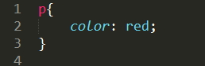

Osnove Css
Kazalo vsebine:
Prejšnja stran
- Osnovni koncepti
- Sestava CSS
- Dodajanje CSS
- CSS selektorji
- Vrednosti in enote
- Pisava
- Box model Concept
- Oblikovanje
- Tehnike pozicioniranja
Nekaj koristnih povezav, ki bolj natančno obdelajo snov.
Osnovni koncepti
Css oziroma Cascading style sheet je spletni programski jezik, namenjen urejanju vsebine dokumenta HTML.
Kaskadiranje določa red upoštevanja določenih pravil na HTML datoteko. Css bo pripisal tista pravila, ki se poravljajo zadnja za določeno značko.
Pomembnost
Pomembnost se nanaša na izvor CSS datoteke, ta lahko izvira iz več virov. Vsak spletni brskalnik ima svoj "brskalniški CSS" z svojimi osnovnimi pravili, nato sledi uporabniški CSS, ta "povozi" prejšnjega pri pravilih, ki se ponavljajo. Uporabniški css določi avtor dane spletne strani. ta Css določa obliko dane spletne strani.
Osnovni red
Ta lasnost Css-a Določa pomembnost tistim datotekam, ki se pojavljajo kasneje v HTML zapisu. V HTML zapisu je možno navesti več CSS datotek. Ponavljajoča pravila se bodo tako upoštevala pri zadnji navedeni CSS datoteki.
Specifičnost
To pravilo določa katera pravila v CSS zapisu se bodo vpoštevala ter katera ne. to pravilo narekuje, da se pri ponavljajočih se pravilih vpoštevajo tista, ki se pojavljajo kasneje v CSS datoteki.
CSS dedovanje
Pri tem pravilu moramo razumeti osnovno sestavo HTML dokumenta. Različna CSS pravila se uveljavljajo na različne CSS elemente, če se lahko. temu pravimo dedovanje, primer: če določimo pravilo belega ozadja pri selektorju body, bodo imeli vsi elementi v HTML, ki so pod elementom body belo ozadje, če pri kakšnem od podelementov to pravilo ni popravljeno ali "povoženo."
Sestava CSS
Css je sestavljen iz dveh delov, selektorja in deklaracije primer:
H1 je v tem primeru selektor. Znotraj zavitih oklepajev je deklaracija (lahko jih je več.)
Deklaracija sestoji iz imena pravila (vse kar je pred (:) ter vrednosti (kar je za :). Na koncu vsake deklaracije je podpičje.
Selektorji so deli Kode v Css s katerimi naslavljamo elemente v HTML
Deklaracija pa je unikatna CSS koda, ta določa pravila ki apelirajo na določene selektorje.
Dodajanje CSS na Določeno stran
Css lahko dodamo na 3 različne načine
Prvi in najpogostejši je dodajanje posebne css datoteke, ki jo nato povežemo v datoteki HTML. CSS dodamo tako, da naredimo novo datoteko z končnico .css .To prazno datoteko moramo nasloviti tudi v HTML, to storimo ponavadi v Head znački z značko Link
- rel: je potreben, specificira razmirje med dano datoteko in povezanim dokumentom
- type: določi v kakšnem tipu je povezan dokument
- href (hyper referance):Specificera pot do povezanega dokumenta. Pri povezovanju se lahko pomikamo v mapo z / ter izven mape z ../ osnovno izhodišče je lokacija našega HTML dokumenta.
Drugi način je dodajanje CSS lastnostni v datoteki HTML; v posebni style znački. ta se po navadi nagaja v glavi
primer:
<head> <style type="text/css"> h1{ color:red; } </head>
CSS selektorji
Ko definiramo selektor v CSS dajemo ukaz HTML datoteki naj doda dana pravila k temu selektorju. Poznamo več načinov kako lahko definiramo selektorje, ter kako z selektorji naslavljamo željene elemente v HTML
Univerzalni selektor
Ta selektor izbere vse elemente najdene v HTML datoteki ta selektor zapisemo z *. Ker njegova pravila veljajo na vseh HTML elementih, se temu selektorju večinoma izogibamo.
Klasični selektor
Ta izbere vse istoimenske elemente v HTML datoteki.
Lahko tudi izberemo več elementov hkrati, pri tem moramo selektorje ločiti z vejico.
Vgnezdene elemente v HTML dostopamo z vgnezdenimi selektorji. Primer takih elementov je na primer seznam ,tabela ipd... do vgnezdenih elementov dostopamo tako da najprej navedemo nadelement, dodamo presledek ter navedemo željen element.
ID in Class
ID je identifikator določenega elementa ter pripada le njemu. z tem identifikatorjem dostopamo le do enega posameznega elementa v HTML datoteki. v CSS ga zapišemo z # pred posameznim imenom identifikatorja. v html sintaksi pa v odpiralno značko vpišemo id="".
primer:
</p id="primer">
Class
Class je podoben identifikatorju, vendar za razliko od ID lahko z classom ciljamo na vgnezdene oz podelemente določenega elementa. tako nismo omejeni na točno določen element. Uporabljanje Class tehnike naslavljanja elementov je najpogostejša. v CSS ga naslavljamo tako, da dodamo piko pred imenom classa, v html pa podobmo kot ID vendar da namesto ID pišemo Class.
Stanja selektorjev ter preostale tehnike
Elementi v HTML datoteki se lahko nahajajo v več stanjih do katere lahko dostopamo prek selektorjev. Obravnavali bomo tri stanja, ki so bila strukturirana za povezavne elemente (a) , vendar jih lahko apliceramo tudi na nekatire druge elemente.
Stanja nastopijo z interakcijo z miško, ko pritisnemo na določen element, ko ga prekrijemo z miško ter ko je bil ta element "že" obiskan/kliknjen. do teh stanj v Css dostopamo z dvopičjem, ter besedami visited, hover, active
Primer:
Vrednosti in enote
Vsaka Css lastnost ima svojo enoto, bodisi ozadnje nekega okvira, naslov slike za ozadje ali pa same dolžine. ko definiramo numerično vrednost moremo skoraj vedno specificirati določeno enoto meritve (izjema so ničle). Brez določenih enot spletni brskalniki ne vedo kaj smo mislili s tem ko smo vnseli neko vrednost. Vsak selektor ima set pravil katere mu lahko pripišemo ali pa prilagodimo, ter vsako pravilo ima set vrednosti in enot ki mu jih lahko določimo.
Merske vrednosti
Delijo se na absolutne in relativne.
Določanje dolžine: Absoliutne merske enote
Absolutne merske enote so vnaprej določene, fiksne ter se ne spreminjajo. Slednje so uporabne samo takrat ko vemo velikost medija na katerem bodo prikazane, ali pa nam pravilo ne dopušča uporabo relativnih.
Css sprejme naslednje merske enote:
- Piksli px
- Milimetri mm
- Centimetri cm
- Inči in
- Pike pc
- Točke pt
Določanje dolžine: Relativne merske enote.
Relativne merske enote določajo enoto, vendar je ta vezana na drugo enoto na primer dolžino ekrana, okvirja ki smo ga sami določili, velikost teksta ipd...
Primerne so ko nevemo velikost medija na katerem bodo prikazane.
- Ex: je enota ki se obnaša glede na velikost male črke x pri osnovni velikosti danega fonta. Enota je relativna na predhodnje določeno velikost fonta.
- Em: podobna kot Ex vendar je ta enota relativna na velikost fonta pri dani velikosti ekrana. (1 em je tako velikost fonta, ki ga ima tekst če velikost ne spreminjamo predhodno (to je ponavadi 16px). Težave tem se pojavljajo ko predhodno spreminjamo velikost teksta.
- Rem (root em): vedno predstavlja osnovno velikost teksta v HTML elementu. Z tem se izognjemo težavam.
- VW (viewport width): je odvisna od širine spletnega brskalnika. 1VW= 1/100 širine brskalnika.
- VH (viewport height): Podobno kot VW vendar je ta enota relativna glede na višino brskalnika.
- vmin (viewport minimum): je minimalna enota tako višine kot dolžine brskalnika. Mere ostanejo relativne do določene točke.
- % (procenti): So najpogostejša oblika relativnih mer.
Urejanje pisave
Pisava ima velikanski efekt pri dojemanju določene spletne strani. Css ima tako veliko možnosti za uravnavanje le te.
- Font Family: določa pisavo. Lahko uporabimo pisavo ki je podprza z strani spletnega brskalnika, ali pa jo vnesemo sami prek html in css. v Font family lahko navedemo več pisav hkrati, ločimo jih z vejico. Css bo izbral prvega, ki je podprt, ostale pisave tako določimo za rezervne. Več o fontih Dodajanje in urejanje pisave.
- Font Weight: Je teža določene pisave oz. debelina. Po navadi nastavimo to na normal/bold lahko pa navedemo vrednosti od 100 do 900 če so te podprte z strani posamezne pisave.
- Font size: določa velikost pisave (vrednost sprejme vse absolutne enote in em ter rem)
- Color: Določa barvo pisave. Barvo lahko določimo z besedo, Hsl, Hsla, Rgb, Rgba, in hex kodiranjem.
Specificiranje barve
- Hex kodiranje[#FFFFFF od 0 do f] To je heksadecimalno kodiranje.#RRGGBB (red green blue)
- Rgb Kodiranje [255,255,255] (red, green, blue) od 0 do 255 primer: rgb(100,100,100)
- Hsl kodiranje [255,255,255] (hue, saturatuon, lightness)
- Besedno kodiranje: barve lahko specificiramo z tudi z besedami Tu si lahko ogledate imena vseh.
Pri Hsl in Rgb poznamo še rezširitev, ki doda kanal za transparentnost (Hsla in Rgba) ta kanal se nahaja na intervalu od 1-0 (1=polna transparentnost, 0=ničelna transparentnost)
Urejanje teksta
- Line Hight [normal,px, brezenotno,em,%]: Vertikalni prostor med linijami teksta
- Text align [Left, right,center, justify]: Določa poravnavo teksta
- Text decoration [none, underline, overline, line-trough]: Dekoriranje teksta
- Text indent [Vse enote za dolžino (tudi negativne)]:Urejanje prve vrstice teksta (horizontalni pomik)
- Text Transform [uppercase, lowercase,capitalize]:Nastavitve črk teksta
- White space [nowrap, normal, pre, pre-line,pre-wrap]: Določa praznino med črkami v tekstu
- Text shadow [px [horizontal offset, vertical offset, blur, color]]:omogoča senčenje teksta.
- owerflow [hidemn, visible, scrool, auto, inherit]:Je nastavitev ki določi kaj se zgodi s tekstom ko se ta "izlije" iz svojega okvira, če je ta premajhen.
Css box model concept
Vsak HTML element (ne glede na to kako je velik ali majhen) je lahko zamišljen kot okvir ki sestoji iz vsebine, robov, paddinga, in margina. to je eden najbolj pomembnih konceptov v CSS.

Box model se aplicira na vse elemente. Elementi so tako naravno prikazani kot block ali pa inline elementi.
Block element zavzame celotno širino svojega nadrejenega elementa. primeri takih elementov so p, h1, div...
Inline elementi pa zavzamejo le širino, ki jo potrebuje. primeri so: a,span, img...
Ta škatlasti model se sestavljen iz štirih elementov: vsebine, paddinga, borderja ter margina. Pod vsebino spada vsa vsebina ki je navedena v html dokumentu. Nato sledi Padding ta skuži kot prostor izven vsebine, vendar še vedno ohrani nekatira lastnosti dane vsebine. Rob ali border je zunanja sestavina nekega elementa. po navadi je neviden vendar ga lahko urejamo. Nazadnje je margin, ta služi za določanje prostora izven elementov.
Oblikovanje
Robovi
- Border width [absolutne in relativne merske enote]: Širina robova
- Border style [none, dashed, solid, dotted]: je oblika robovov, lahko specificiramo vsako stran posebaj.
- Border color [barve]:Specificiramo barvo robova.
Širina, višina in overflow
- Display [none, block,inline-block,inline]: Določa kako se bo element prikazoval
- Visibility [hiden,visible]: Nastavitev ki določa ali je element viden (še vedno ostane)
- width [širina]: določi širino elementa Samo za block in inline block elemente!
- height [višina]:določa višino elementa.
- Box sizing [border-box]:spremeni način računanja celotne višine in širine posameznih elementov, saj všteje padding in border v width / height
Ozadje
S CSS-om lahko vsakemu elemtu priredimo svojo barvo ali sliko. določene vrednosti pa spremenijo kako se te slike/barve prikazujejo. V elementu je vse razen Margina tretirano kot ozadje.
- Background color [barve]: Nastavimo barvo ozadja
- Background immage [url slike]: nastavimo sliko ozadja; če se slika ne more naložiti bo spletni brskalnik prikazal transparentno ozadje oziroma tistega, ki smo ga nastavili.
- Background repeat [repeat-x, repeat-y, no-repeat]: določa ponavljanje ozadja če je ozadje premajhno za svoj okvir.
- Background position [left, right, up, down, lenght units]:določi pozicijo ozadja.
Slike se v CSS strukturi uporabljajo samo če služi zgolj esteckim namenom, če slika služi kakršnikolim vsebinskim namenom jo navedemo v HTML.
Ker se lahko ozadja ponavljajo, lahko to uporabimo za vzorec. Primere takšnih najdemo na Sledeči spletni strani.
Okviri
- Border radius[px,%]:Določa radij zaobljenosti okvira.
- Border radius je okrajšava za border-top-left-radius, border-top-right-radius ipd...
- Več o okvirih na tej povezavi.
Senčenje elementov
Elemente senčimo z Box-shadow lastnostjo
Zunanje senčenje:
Box shadow:[horizontal offset] [vertical offset] [optinal blur radius] [optional spread radius] [color]; enote so lahko pozitivne in negativne.
Notranje senčenje
box-shadow:inset 0 0 10px #000000; pred vrednostmi dodamo inset.
Kombiniramo lahko več Senčenj
Linarni in Radialni Gradienti
Css podpira linearne in radialne gradiente, to so prehodi barv. barve lahpo prehajajo v transparentnost, ali pa v druge barve. barv je lahko več. Ker je ta sintaksta kompleksna ponavadi uporabljamo kar spletni generator gradientov.
CSS tehnike pozicioniranja elementov
Block elemtni in inline elementi
Spletni brskalnik tretira vsak element na spletni strani kot block ali inline block element. če ga tretira kot block pomeni da ta element zavzame celotno širino sovjega okvira. Inline elementi pa zavzamejo samo tisto širino, ki jo potrebujejo, tako jim ne moremo določiti svoje širine in višine.
Inline Block elementi so mešanica obeh. Ne zavzamejo svoje poune širine okvira vendar jim lahko še vedno pripišemo širino in višino.
To uravnavamo z Css vrednostjo Display [block, inline, inline-block]
Floating oz. "plavanje"
Floats so eni najbolj pogostih metod za oblikovanje spletne strani z Css-om. Da bi razumeli metodologijo flotanja se lahko obrnemo na tiskanje. Tam uporabljajo tako tehniko pri printanju vsebin na časopise. Tehnika plavanja deluje tako da določimo en glaven element, ter naročimo ostalim "kam" naj se umaknejo oziroma "priplavajo" na vrh (levo ali densno). Dostikrat se zgodi da se nam preostali elementi porušijo z glavnim (tistim ki smo mu dali vrednost float). To lahko popravimo z tehniko imenovano Float-Clearfix